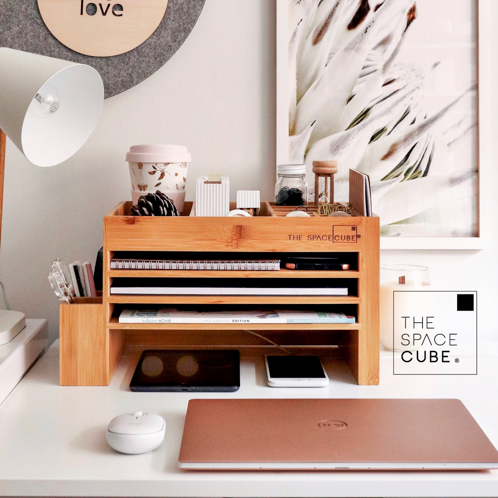
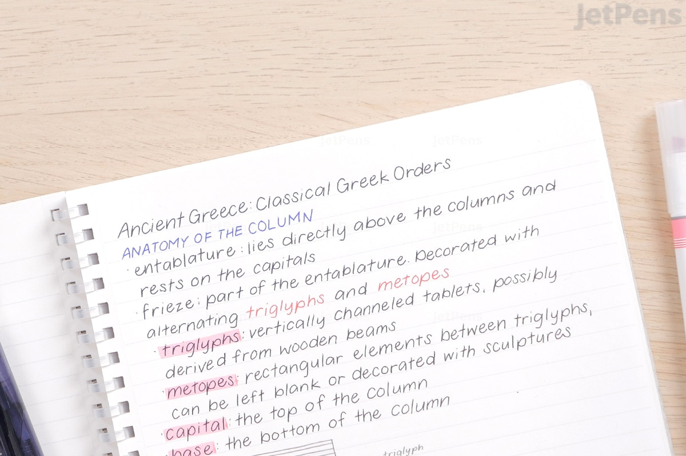

One way that a student can improve their writing skills is by setting aside dedicated time for writing and practicing regularly. This can involve writing essays, research papers, or other written assignments for classes, as well as writing for personal projects or interests. It's also important for students to seek feedback on their writing, either from a teacher or tutor, or from a peer review group. This can help to identify strengths and areas for improvement, and provide guidance on how to improve. Additionally, students can benefit from reading widely and exposing themselves to different writing styles and forms, as this can help to expand their vocabulary and improve their writing. Regular practice and dedication are key to improving writing skills.
One way a student can keep their study area separate is by setting aside a specific room or area in their home for studying. This designated space should be free of distractions and equipped with the necessary tools and resources for academic success, such as a desk, chair, and bookshelves. It's also important to establish boundaries and let others in the household know that this space is for studying only and should not be disturbed during designated study times. Additionally, it can be helpful to minimize clutter and keep the study area organized to maintain a clear and focused mindset. Maintaining a consistent study schedule and setting aside dedicated time for studying in this space can also help to reinforce its purpose and importance.
Taking hand notes during online classes can be a helpful way for students to actively engage with the material and improve their understanding of the subject. To effectively take notes, students should start by organizing the information into main points and subpoints, and use abbreviations and symbols to save time and space. It's also important to listen carefully and actively participate in the online class, asking questions and clarifying any points that are unclear. Additionally, students should avoid simply copying down everything that is said, and instead focus on capturing the most important information and ideas. Reviewing and organizing the notes immediately after the class can also help to solidify the material and identify any gaps in understanding.
Finding the best time to study and memorize can vary depending on the individual student and their personal schedule and preferences. Some students may find that they are more alert and focused in the morning, while others may be more productive in the evening. It's important for students to experiment and identify the times of day when they are most able to concentrate and retain information. In general, it's best to avoid studying right before bedtime, as this can interfere with sleep and make it difficult to retain information. Additionally, it can be helpful to break up study sessions into shorter, more focused periods of time, rather than trying to study for long stretches at once. Regular breaks and physical activity can also help to improve focus and concentration.